说起“图形问题”，大家会联想到什么呢？
角度、面积、体积……我们在学校里解答过好多诸如此类的问题。但在本书中，我们要挑战一些跟课堂上截然不同，却妙趣横生的问题。
在涉及图形的数学问题中，有一些非常不可思议，让人在不知不觉中就陷入了圈套。下面就为大家介绍其中的两个问题。
请大家看一下第004页和第005页的图。
将这个图形剪开，然后再重新排列拼好……问题来了：“为什么有一块消失了？”大家能看出这个图形中的骗局吗？
请大家试着用纸将这个图形剪开后拼拼看。
Q1 将正方形的一条边分为7块正方形，然后像图中所示那样将其剪开后重新排列起来，结果最中间的一块居然消失了。这是怎么一回事儿呢？
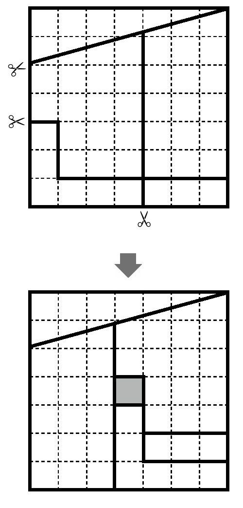
Q2 将一个三角形的底边分为13块，高分为5块。如图中所示那样剪开后重新排列，发现也消失了一块。这是什么原因？
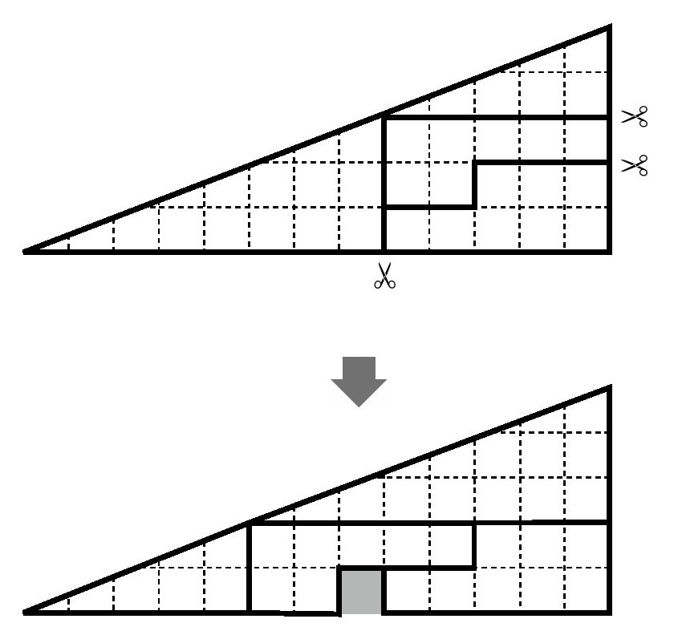
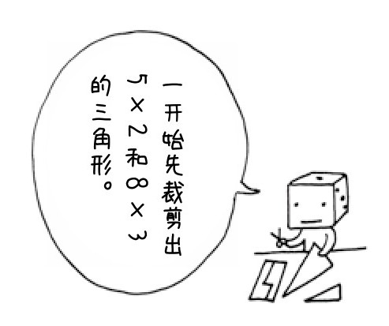
不管盯着图形看几遍，都找不到答案。想必有不少人为此伤透了脑筋。事实上这两个图形哪个都没有“消失一块”。
问题在于以下两点：
图形的面积在重新排列前后是否发生了变化；
重新排列后的图形与原来的图形有着微妙的差别。
那么让我们来揭晓正确答案。请大家看下一页的图。
仔细观察Q1中重新排列后的图形，会发现它的高增加了1/7。也就是说，原来的图形是正方形（7块×7块），但重新排列后的图形却变成了一个长方形[7块×（7+1/7）块]。
因为正方形每条边都分为了7个块，也就是说，有7个块增加了1/7的高度，所以面积增加了整整一块。这也就是为什么中间那一块变成了“消失的一块”。
Q1
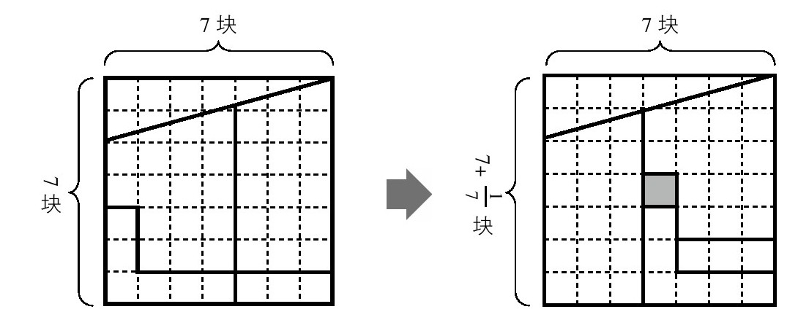
Q2
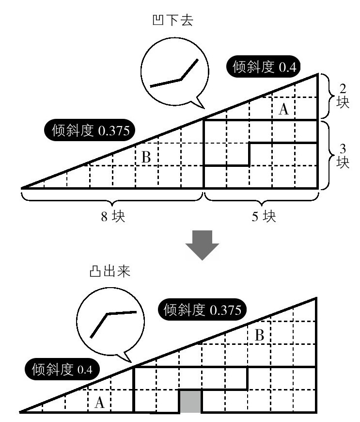
消失的一块的真面目
请大家注意观察Q2中的三角形A和B。三角形A“高长2×底边长5”，倾斜度为2/5，也就是0.4；三角形B“高长3×底边长8”，因此倾斜度为3/8，即0.375。
也就是说，作为斜边的那条边中间是弯折的，是两条倾斜度不同的直线连接在了一起。将A和B的接合部分放大仔细观察，我们会发现，没有重新排列前，斜边是凹下去的，而重新排列之后则凸了出来。
正确的说法是，原来的图形和重新排列后的图形都不是三角形，而是“四边形”。
“重量单位”是从地球中衍生出来的。
我们惯用的质量基本单位是“千克”，那大家知道这“千克”是如何定义的吗？其诞生的背景与长度单位“米”息息相关。
“1米”原本的定义是“从地球的北极点到赤道之间的子午线弧长的一千万分之一”。边长为1米的十分之一（10厘米）的正方体体积为1000立方厘米，也就是“1立方米”，而“1立方米水的质量”即被规定为“1千克”。重量单位的由来与地球有着密不可分的关系。
那么就让我们来挑战一下有关“重量”的问题，让思想在“地球”上驰骋吧。
Q 有10个装着硬币的袋子。其中9个袋子里装着货真价实的真硬币，只有1个袋子放了假硬币。真假硬币从外观上看起来完全相同，但是重量不同。真硬币重10克，假硬币重11克。如何用秤只称一次就找出装着假硬币的袋子？
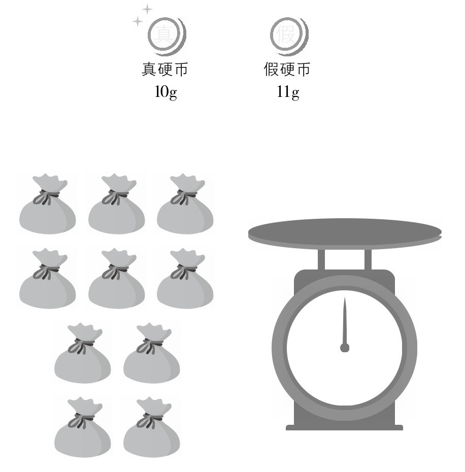
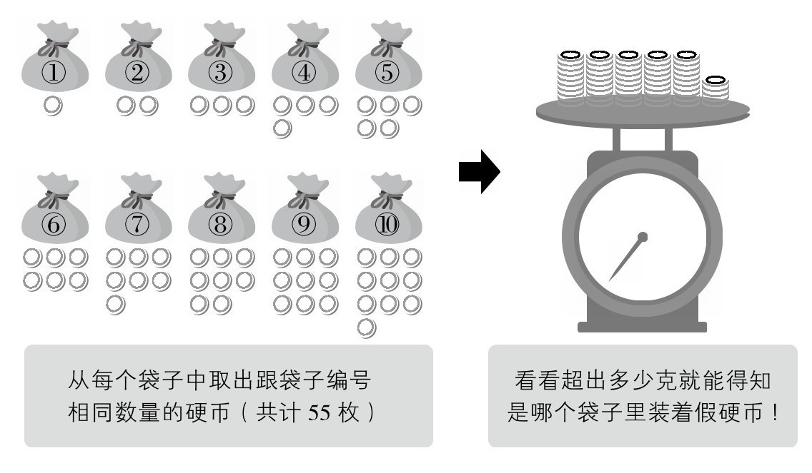
找出装着假硬币的袋子的方法
按照下面的方法称量，就能找到装着假硬币的袋子。
在10个袋子上分别标上①到⑩的号码，从①号袋子里拿出1枚硬币，②号袋子里拿出2枚，③号袋子里拿出3枚……以此类推，从袋子中取出与其编号相应数量的硬币，这样一共会取出55枚硬币。
接下来，将这些硬币一起放到秤上称重。如果装着假硬币的是①号袋子，那么总重量应该比550克重1克。如果是②号袋子则超出2克，③号袋子则超出3克……诸如此类，根据超出的克数就可以找到“哪一袋是假硬币”。
Q 这里有8枚硬币，其中混入了1枚假硬币。假硬币从外观看来与真硬币完全相同，但是稍微轻一点儿。如何用天平称两次就能找出这枚假硬币呢？
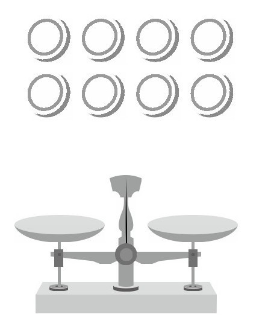
按照以下方法用天平称量就能够找到假硬币。
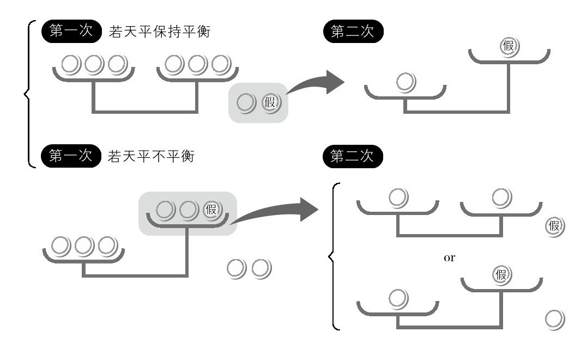
找到假硬币的方法
首先，将硬币分为三组，两组3枚的和1组2枚的。然后将3枚的两组放到天平两端（第一次）。
若天平保持平衡，就说明假硬币在没有拿到天平上的那组2枚的硬币里，接下来把那2枚硬币放到天平上称量，比较轻的那个就是假硬币（第二次）。
如果天平不平衡，说明假硬币在较轻的那一组里，从较轻的这一组里拿出2枚硬币放到天平上（第二次）。如果天平保持平衡，那么“没有放到天平上的那枚是假硬币”。如果天平不平衡，我们就可以得知“比较轻的是假硬币”。
Q 想用天平称药的重量，但只有1克、3克、9克和27克四个秤砣。只用这四个秤砣如何称出以下重量？
①7克②16克③22克④35克
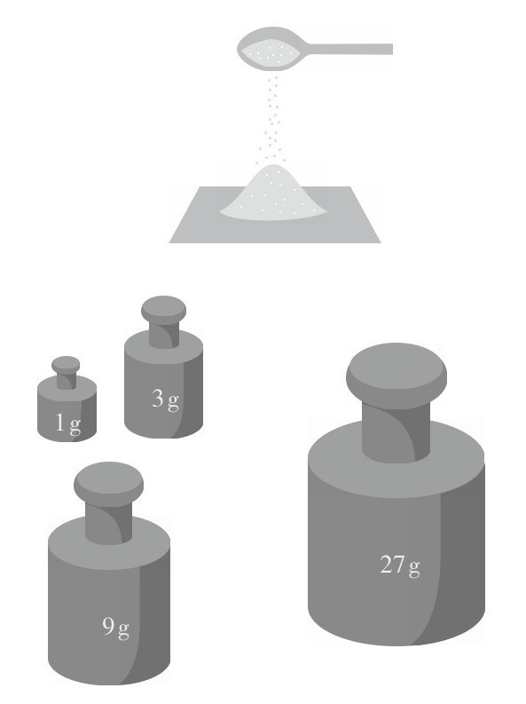
用以下方法使用秤砣来称量（托盘左右颠倒也没关系）。
①在左侧的托盘里放上1克和9克的秤砣，右侧的托盘里放上3克的秤砣和药。
②在左侧的托盘里放上1克和27克的秤砣，右侧的托盘里放上3克、9克的秤砣和药。
③在左侧的托盘里放上1克、3克和27克的秤砣，右侧的托盘里放上9克的秤砣和药。
④在左侧的托盘里放上9克和27克的秤砣，右侧的托盘里放上1克的秤砣和药。
用这些秤砣可以称出从1克到40克之间所有的重量。只用区区4个数字就可以创造出40个数字，真是令人震惊。
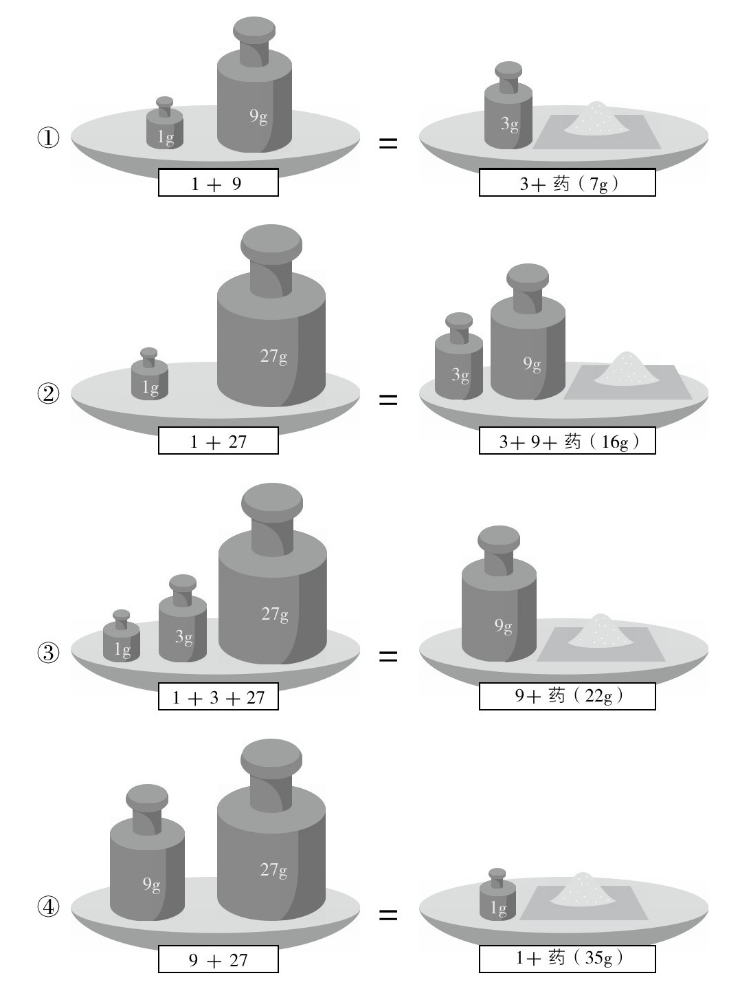
只用4个秤砣来称重
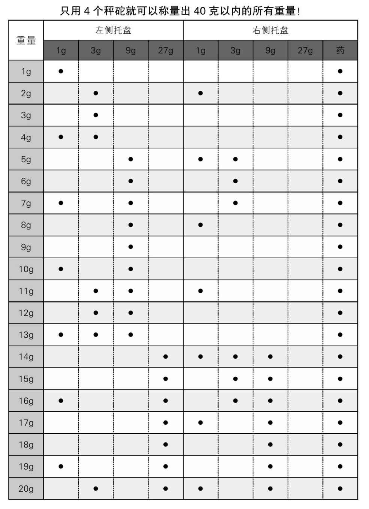
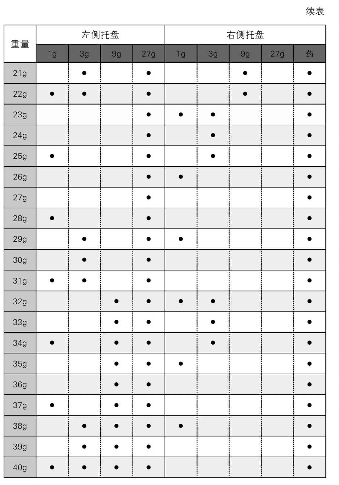
数学世界中存在着一个有关“巡回推销员”的有趣难题。就像题目里说的这样，这个问题的主角就是“推销员”。
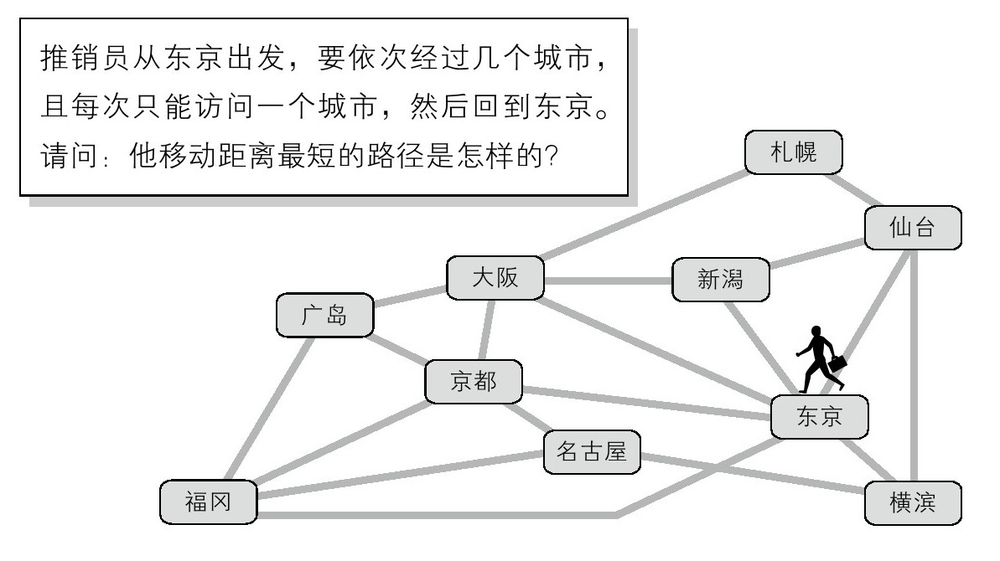
巡回推销员问题
所谓“巡回推销员问题”就是“一个推销员每次造访一个城市，经过所有的城市后再回到出发点，怎样做才能让他移动的距离是最短路径”。今天去大阪，明天去广岛……将这个推销员想象成在日本全国范围内进行推销的工作人员就容易理解了。
别看题目好像很贴近生活又很简单，这可是“排列组合最适化问题”中有名的难题，就算用上超级计算机，想要求得最适合的解答也相当困难。
将城市数设为n，那么可能的路径总数就有n！/2n条。
当n是一个小数字时，我们可以尝试所有组合的可能，然后从中找到最短路径。可是，当n是一个很大的数字时，这种组合的数量会呈爆发式增长，想要尝试所有路线事实上是不可行的。
比如说，要经过10个城市时，路径排列的总数就达到了181440条；经过30个城市时，可能的路径就有4.42×1030 条。
这个数字到底有多么令人绝望，我们用计算速度为10太Flops的计算机（1秒钟能演算1013 次小数点浮动的计算机。顺便告诉大家，playstation 4的运算速度是1.84太Flops，地球模拟程序的运算速度是35.86太Flops），想要运算出所有的组合需要25万兆年以上。宇宙诞生已经经过了137亿年，却无法跟这项运算所需的时间相比。
就像“费马大定理”一样，正因为这是个绝对性的难题，所以关于它的解法才得以进化。以“巡回推销员”为例的“排列组合最适化问题”是一个非常现实的问题。
超市的商品配送；
快递等的配送计划问题；
汽车导航系统的路径检索；
手机的频率分配；
铁路、航空乘务员的分配；
制作体育比赛日程表等的调度……
以上都是与我们日常生活息息相关的活动，而这些都是“排列组合最适化”的问题。“巡回推销员问题”自身已经被应用到了配送计划制订和电子线路板上安装零件时挖洞的顺序决定问题上。
在“巡回推销员”的问题中，如果城市数很多的话，想求得最适答案简直难如登天。高效又严谨的求解方法还没有确立，因此求得近似解的方法就显得尤为重要了。其中有一种有效的近似值解法被称为“遗传算法”（Genetic Algorithm）。
“十进制算法”是一种决定计算顺序、旨在解决问题的阶段式方法。用特定的编程语言（C、Basic、Java等）来记述算法就叫作程序。
遗传算法是1975年由密歇根大学的约翰·霍兰德（1929～）提出的。生物的进化依赖于遗传因子的重组，他从生物的“进化过程”中得到启示，得出了“最适化算法”，即从遗传因子中选择复数的个体（解的候补）组成集团，再利用这个集团将解的候补一个个重组，以探索最合适的答案的计算方法。
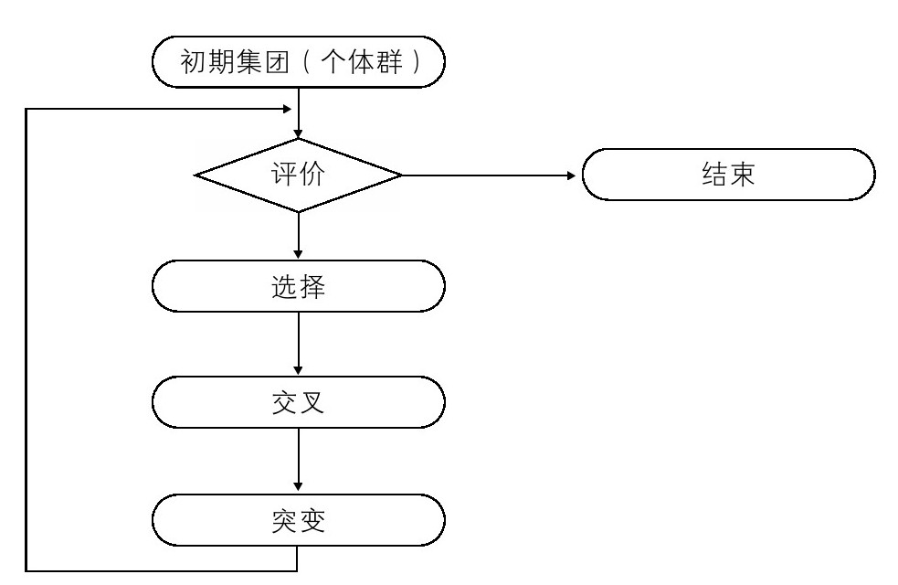
遗传算法
将问题当作物种遗传因子序列的进化来谋求最适解。遗传算法中会用到“选择”（适应环境的后代个体会增加，不适应的物种则会减少）、“交叉”（按一定的概率将两个物种的遗传因子序列组合起来形成其他物种）、“突变”（遗传因子序列的特定存储单位发生了反转）等遗传学范畴内的概念来进行操作。
如果在网上搜索“巡回推销员问题Java”，我们会找到很多程序。
实际上，在网上能看到很多关于“巡回推销员”问题的解法。
遗传因子本属于生物学，但是却出现在了数学和计算机的世界，真是有趣极了。而且，它还有更深的妙趣，那就是利用遗传因子而诞生的超高速计算机——DNA计算机。
令人震惊的是，信息学家杰拉尔德·埃德尔曼（1929～）研读了DNA双螺旋结构的发现者——美国生物学家詹姆斯·沃森（1928～）的《遗传因子的分子生物学》后，产生了将DNA应用到计算机中的灵感。1994年他制作出DNA计算机，并为大家演示了其对“巡回推销员”问题的解答。
运用DNA算法解答巡回推销员的问题时，首先将各个城市及连接的路径用DNA的四个碱基A（腺嘌呤）、T（胸腺嘧啶）、G（鸟嘌呤）、C（胞嘧啶）表示出来。
东京=｛CGCATT｝、大阪=｛CTAGAT｝，像这样将DNA人工合成，然后放到试管中混在一起让它们发生反应。这样一来，由于DNA的特性是只有“A和T”“C和G”这两种组合，从东京和大阪的碱基序列中就可以创造出｛TAAGAT｝这样的新DNA。这也就成了东京和大阪之间路径的一个候补项。
像这样可以表示解的候补项的DNA会因为PCR（聚合酶连锁反应）被大量制造出来，再根据去哪个城市比较顺路为条件将这些解分离开来，最后将表示解的DNA抽出来。
因为DNA是极小的分子，可以大量制造。仅1立方厘米就可以容纳6×1016 个DNA分子。如果每个DNA都能当作计算单位来运作，那么超并列运算就可能实现，这对于像“巡回推销员”这种复杂、无法可解又很耗费时间的问题来说是非常有效的方法。
我们可以认为DNA计算机就是由DNA组成的生命体，就是计算机本身。很不可思议吧！
生物的进化已经持续了137亿年，以与我们生活息息相关的“巡回推销员”问题为契机，计算机也开始跟生物一样迈上了进化之路。
计算机的世界现在正在实现着令人惊奇的“进化”。
也许某一天，会有一个超越人类智慧的算法横空出世，可以解决所有的数学难题和日常问题。
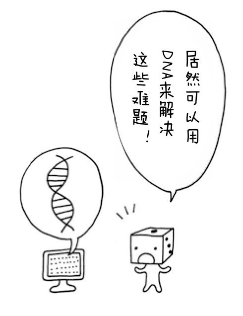
“黄金比例”和“白银比例”都是人类觉得美和协调的比例。黄金比例是1：约1.6。比如，国旗和名片的横竖都是这个比例。而白银比例是1：2（约1.4），A版和B版复印纸横竖都是这个比例。
有时翻看富士山的写真集，我的目光就会被钉在某张照片上无法移开。因为富士山和倒映在湖面的倒过来的富士山，上下左右都完美地对称着。那山脊的弧线似乎在对我深情地倾诉——
仔细观察，就会觉得那弧线似乎跟指数函数“y=ex ”的图像有一部分是重合的。
指数函数可以用来说明各种各样的自然现象。其图像特征是从与x轴无限接近平行的状态开始，之后发生急剧变化，最后无限接近与x轴垂直的形状。
指数函数的缩写是“exp”，是取了“exponentia（指数）”的前三个字母。看到这个缩写，我不由得想起以同样三个字母开头的一个单词“explosion”（爆炸）。因为“从某一个点开始数值发生爆炸性的变化”正是指数函数的特征。
详细内容会在第109页介绍，现在请大家思考一下发生在我们身边关于洗澡水变冷的现象。热茶和肉包子也是如此，接触到外面空气的瞬间，温度开始急剧下降，可当接近室温时，这种变化就放缓了。如果将温度变化的样子画成图表，就会画出先前指数函数的曲线（见第028页）。
发现富士山山脊和指数函数的曲线相重合后，我又将目光投向了葛饰北斋画的《富岳三十六景》。其中的《神奈川冲浪里》是人们谈起黄金比例时屡屡言及的作品，北斋画中描绘的波浪形状跟“斐波那契数列（黄金分割数列）”（1、1、2、3、5、8、13、……像这样相邻两项的和等于下一项的数列）中衍生出来的“螺旋”非常接近，因此画面整体呈现出黄金比例。
我并不认为北斋懂得数学知识，只是这位艺术家能画出从数学角度欣赏也很美的画作，那么在这个画着富士山的系列作品中，出现指数函数的曲线也就不是什么奇怪的事了。
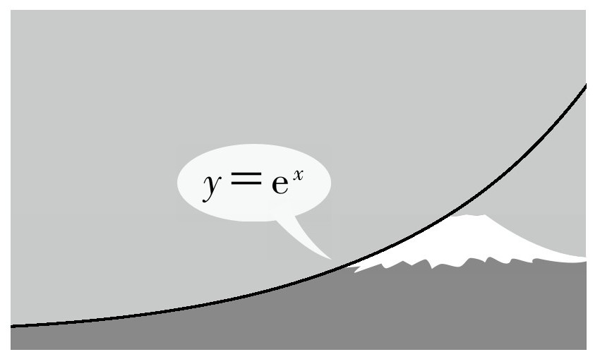
北斋笔下的富士山中潜藏着数学问题
仔细一看，还真有了发现。《凯风快晴》这幅作品中描绘的山脊就跟“y=ex ”的图像展现出完美的一致。
想必有人会认为，既然山脊本身就是指数函数的曲线，描绘它的画呈现出同样的曲线可不就是理所当然嘛。
但是北斋不可能拍下照片去临摹。归根结底，他还是根据自己的感性这面滤镜去把握富士山的美，然后再亲手一点点描绘出来。
画作居然与数学意义上的曲线完全一致，这真让人惊叹不已。
那么，创造出如此美妙曲线的“e”究竟是个什么样的数字？“e”被称作“纳皮尔常数”，源自微积分。
简单来说，微分表示“瞬间的变化”，积分表示“最终的结果”。比如说，汽车的速度就是微分，而累计距离数值则用积分表示。想要表示时刻发生变化的样子就不得不用到“e”这个数字。
这个“e”等于2.71828182845904523538……是一个无限不循环小数。这样的数字称为“无理数”。
顺便告诉大家，无理数的伙伴中还有一位很著名的朋友，那就是圆周率“π”。“π”和“e”是数学和物理学领域里非常重要的基本定数。有这两个数字登场的最有名的算式要数欧拉等式——“eiπ =-1”。
算式中的“i”（虚数单位）也是一个不可思议的数字，它的平方等于-1。两个无限的无理数和虚数组合，得到的却是“-1”这样一个简单的答案。
诺贝尔奖得主、美国物理学家理查德·费曼（1918～1988）称赞这个算式为“人类的至宝”。
让我们将话题转回富士山。
几乎在日本列岛中心位置的火山，为什么有着可以用包含神奇的纳皮尔常数的算式“y=ex ”来表示的山脊？
这意味着，富士山从某种意义上讲，是在比较理想的环境下诞生的。
如果第一次喷发是在一个完全水平的地面上，同时岩浆垂直向上喷出，会变成什么样？
我们单纯考虑的话，离喷火口越近的地方就会沉积越多的岩浆，离得越远的地方沉积的量会越少。如果火山喷发能始终保持相同的态势，岩石也均一地分散到四面八方，那么岩浆体积和距喷火口的距离之间的关系就可以用微分方程式来考量。解开微分方程式后，得到的富士山山脊的曲线正是指数函数的图像。
虽说指数函数跟温度变化等自然现象有着很深的关系，但现实中的火山喷发不可能完全按照设定的理想状况进行，想要得到科学实验中那样的形状更是不可想象。
但是，富士山正是在这种与理想状态极其接近的情况下形成的，所以富士山山脊能与纯粹的数学曲线相吻合。像这样的火山，就算纵观全世界也找不出第二个。这样的山存在于我的祖国，这令我非常高兴。
不过，富士山山脊的弧线只是指数函数的一部分。如果无法准确地想象出“y=ex ”图像所描绘的曲线，无论怎么盯着富士山不放，也不会知道它们是一致的。数学老师经常会徒手在黑板上画出指数函数的图像，但看着这种大略画出的曲线是不会产生正确的想象的。
就我自身而言，以前就对“y=ex ”正确的曲线形状怎么也看不够。那个图像已经深深沁入了我的身体，正因如此，当我看到富士山的照片时，一下就发现了它们在数学范畴内的一致。
另外，像北斋这种感觉敏锐的人可能在下意识中就融合了数学的感觉。虽然他没有专门学习过数学，不过正因为对数学有着一种感觉，所以能感受到数学图形的美和协调，才能在其作品中再现《神奈川冲浪里》中的黄金比例和《凯风快晴》中的指数函数曲线。
如此说来，我们人类可能天生就有一种本能，可以感受到数学的美和协调等带来的快乐。学校里强行灌输的数学知识可能是很多人的心头之痛，但其实数学本来是一种游戏。实际上从很久以前就有一大批数学家，他们不受谁的命令，自己想出数学问题，然后专心解答。他们就是在这个过程中寻找乐趣的。
而这种感觉并不是数学家的特权。
日本人也好，外国人也罢，不管谁看见富士山都会感受到它秀美的姿态吧。
每个人对美的感受各不相同，让成千上万人都觉得美的东西并不多见。但是，拥有“y=ex ”形山脊的富士山大体是个例外，它似乎拥有让人神魂颠倒的魅力。我认为这是因为我们生下来就有着一颗感受数学之美的心。
这座讲述数学之美的山正屹立在日本。我希望越来越多的日本人能够仰望富士山，唤醒自己那颗沉睡的“数学之心”。
多加注意观察，我们会发现身边有很多“图表”。
对我们来说，最常见的“图表”就是“统计图表”，用来表示在整体中所占的比例或数量多少的比较。例如：
表示政党支持率的“圆形图表”。
表示各月降水量的“柱形图”。
表示人口世代构成比例的“带状图”。
表示股票走向的“折线图”和“蜡烛图”【将股票的四个基本值（初始值、最终值、高价、低价）以蜡烛的形状表现出来】。
表示营养平衡的“雷达图（蛛网图）”。
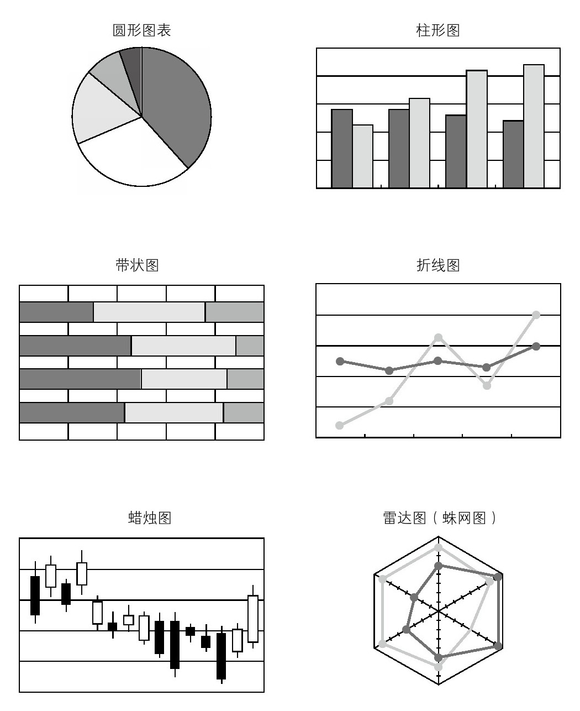
各种各样的统计图表
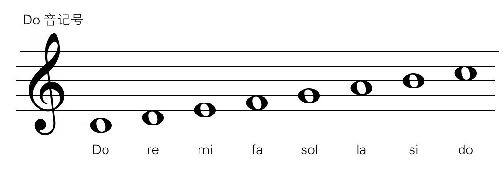
五线谱也是图表
像图中所示，人们根据不同的目的想出了大量的图表。你应该也在很多地方亲眼见过。
而且在音乐中也有图表。
记载着音符和休止符等的五线谱，不过是横轴代表“时间”，纵轴代表“音程”的图表。
在数学世界，各种函数都由图表来表示。
请大家回忆一下数学课。用x轴和y轴来表示点的位置，如（1，2），画出直线或抛物线的图表。
比如，用抛物线来表示函数y=x2 的算式。我们来列举出满足这个算式的点。
（-2，4）（-1，1）（0，0）（1，1）（2，4）……
将这些点在坐标平面中画出来就会形成抛物线的图表。
课上教给我们的函数图表一般只有横轴x和纵轴y，未免感觉有些单调。
但是，若将横轴设定为“时间”、纵轴设定为“金额”“雨量”等具体数值时会怎样？
这时图表突然被赋予了现实感，图表马上摇身一变，给人以不同的印象。
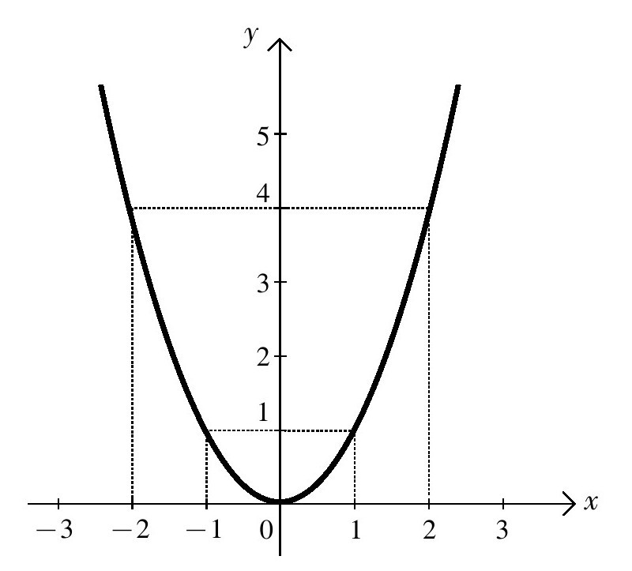
函数y=x2 的图表
另外，函数可以根据“算式”和“坐标”变身成一种叫作“图表”的全新姿态。通过观看图表，我们会对算式的真面目有一个视觉上的感受。
随着社会发展，我们被各种各样的数量包围了起来，想要从视觉上表现这些数量之间的关系，必不可少的工具就是“图表”。熟练使用图表，可以将我们的意图精确地传达给对方。我们每天的生活都沐浴在图表的恩惠之下，而支撑图表发展的正是数学。
说起弗洛伦斯·南丁格尔（1820～1910），大家都知道她是一位有名的白衣天使（护士）。那么，大家知道这位对近代护理事业做出卓越贡献的姑娘的另一面吗？其实她是一位“统计学家”。
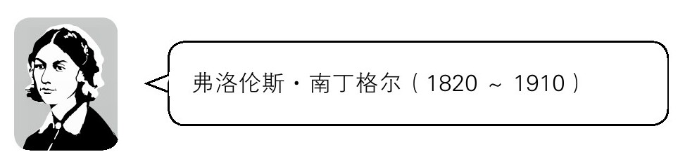
历史舞台是克里米亚战争时期（1853～1856）。在报纸上看到前线伤员护理情况的严酷，南丁格尔率领着38位护士毅然从军。
她以一种献身精神为负伤的士兵做护理，不过正如报纸上说的那样，在战争现场，对伤兵的护理非常粗糙，而且因此造成死伤者数量的增加。可是政府和军队却不予以理解。因此，前线的护理救护体制可以说非常不完备。
面对这样的状况，南丁格尔是如何应对的呢？
她并没有被现实打败，而是首先明确了英国士兵死亡是医院卫生管理不善所致，并且思索着如何让国会议员明白这个事实。
这时她想到了“图表”。
如果有了图表，就算对数字不太了解的人也能明确地了解实际状况。
如此一来，南丁格尔开始考虑设计一种叫作蝙蝠之翼（Bat’s Wings）的彩色图表。
通过“蝙蝠之翼”，国会议员终于认识到了改善战场卫生环境的必要性，而其结果就是伤兵的死亡率急剧下滑。她甚至还新建了陆军医学院，改善了整个英国医院的卫生环境。
为什么身为护士的南丁格尔能够想出如此具有独创性的图表呢？
这与她年轻时对“数学”和“统计学”有着很深的涉猎是分不开的。对南丁格尔影响最深的是比利时统计学家凯特莱（1796～1874）。他提倡将概率论应用于社会现象中的“社会物理学”，被称为近代统计学之父。
南丁格尔在与凯特莱的交流中得到了无法撼动的数学力量，并与他携手在国际统计会议中共同选择了卫生统计的统一标准。这样一来，南丁格尔在身为护士的同时，还是一位统计学家。
与数学为伍的南丁格尔护士为了救人，将数学的力量发挥到了极致。现在我们除了尊白衣天使南丁格尔为“近代护理教育之母”，也不要忘了她同时还是一位“统计学的先驱”。
可以说，南丁格尔用图表改变了世界，拯救了无数人的生命。
正因为有了图表，一些容易被忽视的数字才能引起人们的注意，从视觉上正确地传递信息。
无论是统计图表还是函数图表，其发展都与我们人类的生活息息相关。想必以后“图表”也会跟着社会共同进化吧。
接近100的数字乘法马上就能算出结果有一个秘密的绝招。比如，能够马上算出“93×95”“98×99”这种“接近100的数字”的乘法。这种算法的要点是将100当作基准。这样就可以通过很简单的计算得到解答了。
下面以“97×96”的计算为例，对这种方法进行说明。
STEP1求出每个数字与100的差。97与100的差是3，96与100的差是4。
STEP2用100减去STEP1中求得的数字之和。这就是答案中百位之前的数字。
100-（3+4）=93，所以答案中百位之前的数字是93。
STEP3求STEP1中得出数字的积。这就是答案十位以下的数字。
3×4=12，所以答案十位以下的数字是12。
因此，97×96的答案就是9312。
如果有人对这种计算方法能得出正确答案感到半信半疑，可以用计算器确认一下。
接下来我们来看一看其他运算是不是也同样可以使用这个方法。
（92×93）
STEP1 92→8，93→7。
STEP2 100-（8+7）=85，得出百位以上的数字是85。
STEP3 8×7=56，得出十位以下的数字是56。
得出92×93的答案是8556。
◆93×95的秘密绝招计算法
STEP1分别求出与100的差。
93→7 95→5
STEP2用100减去STEP1中求得数字之和。
这就是答案中百位之前的数字。
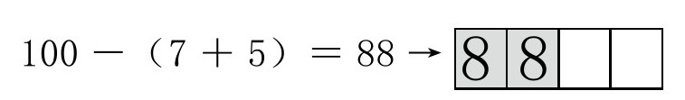
STEP3求STEP1中得出数字的积。
这就是答案十位以下的数字。
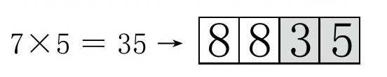
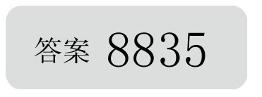
（98×99）
STEP1 98→2，99→1。
STEP2 100-（2+1）=97，得出百位以上的数字是97。
STEP3 2×1=2，得出十位以下的数字是02（答案是一位数时十位数为0）。
得出98×99的答案是9702。
怎么样？用这个算法算出来的每个答案都与计算器相同。有了这个计算方法，即使不用复杂的计算也能瞬间求出正确的解，叫作“秘密绝招”简直再贴切不过了。
为什么接近100的数字乘法可以这样计算呢？让我们以开头的“97×96”为例来解明其中的奥秘吧。
首先，将乘法想象成“四边形面积计算”。四边形的面积为“高×长”。
边长为100的正方形面积为“100×100”。
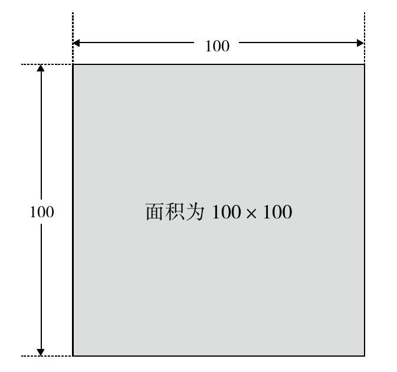
边长为100的正方形面积
接下来，我们来思考高为97，长为96的长方形的面积。
也可以直接计算97×96（这是一般通常的做法），但是秘密绝招算法就会利用边长为100的正方形。所谓算法要点“将100作为基准”就是根据这个正方形得来的。
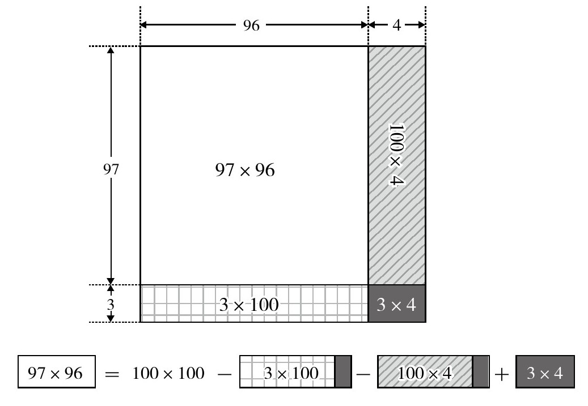
计算方法的秘密在于“四边形”的面积
请看上面的图。想要求得的长方形面积可以从“边长为100的正方形”中剔除一个“高为3宽为100的长方形”和一个“高为100长为4的长方形”。
用算式来表示就是100×100-3×100-100×4。
但是，仔细看这幅图，剔除的两个长方形有一处重合的部分。这一块被除去了两次，因此要归还一次。也就是说，必须在刚才的算式上加上。
也就变成了100×100-3×100-100×4+3×4。
将这个算式重新整理一下。
97×96=100×100-3×100-100×4+3×4
=100×（100-3-4）+3×4
=100×[100-（3+4）]+3×4
STEP2的部分是100×[100-（3+4）]，STEP3的部分是3×4。
因此，乘法（97×96）的答案，百位以上的数字就是100-（3+4）=93，十位以下的数字是3×4=12，最后答案为9312。
100以上的数字也适用！
这个计算方法也可以应用在“比100稍大一点的数字”乘法中。
（102×107）
STEP1求出各个数字与100的差。
102得到“2”，107得到“7”。
STEP2求出100和STEP1中得到的数字之和。（这里和前面不一样！）这就是答案中百位以上的数字。
100+（2+7）=109，所以答案百位以上的数字是109。
STEP3求STEP1中得到的数字的积。得到答案十位以下的数字。
2×7=14，所以十位以下的数字是14。
得出102×107的答案是10914。
将乘法看作“四边形面积”，相同的运算也有不同的看法。如果眼睛里只看到一条路，是无法找到隐藏在运算深处的“秘密绝招”的。
对同一个算式不停地东想西想，可能就会有新发现。
到现在为止，以数学为主题的电影已经拍摄了好多部。
由马特·达蒙主演，剧本为《心灵捕手》（原题为Good Will Hunting，1997年，美国），还有根据小说《博士的爱情算式》（小川洋子著）改编的同名电影（2006年）都获得了巨大成功，令我记忆犹新。
在这些作品的影响下，对数学抱有亲切感的人也有所增加了，这对我来说真是天大的喜讯。除此之外，还有很多以数学为中心的优秀影片，在此为大家做一个介绍。
《美丽心灵》
本片是以一位真实存在的数学家约翰·纳什（1928～2015）为主人公的故事。
纳什（罗素·克劳饰）有着“想要找到支配时间一切的真理”的野心，无意中构建了将集团中个人意志决定结构公式化的“博弈理论”。但是，在精神分裂症的折磨之下，他的身心都趋于崩溃，是他的妻子艾丽西亚（詹妮弗·康纳利饰）将已经看到地狱的纳什拯救了出来。纳什的理论对从经济学到现实社会的影响都非常大，最终赢得了诺贝尔经济学奖的无上荣光。
这部电影完美地刻画出了冷战时期美国数学与数学家的使命以及数学家的苦恼等现实世界的问题。
顺便值得一提的是，以他的名字命名的“纳什平衡”是在把所有参与者都当作对手的战略下，以争取自己利益的最大化为目的时成立的一种“平衡状态”。
观影时请大家务必先了解一下约翰·纳什和他的理论，这样对电影能有一个更为深刻的了解。
《求证》
凯瑟琳小姐（格温妮丝·帕特洛饰）从天才数学家的父亲（安东尼·霍普金斯饰）身上继承了数学才能与不稳定的神经。她在照顾患有精神疾病的父亲的同时，写完了父亲未完成的“证明”（proof）。电影的后半部分就是围绕着这本笔记进行的。
这部电影在数学方面的妙处在于其并没有详细记述“证明了数学的哪个问题”。
作品中只用“关于质数的证明”“数学家们多年的梦想”等含糊的表述一语带过，听完之后也无法明确其含义。
不过影片中出现了“狄利克雷L函数”“西格尔零点”等台词，可以知道作品是关于“黎曼猜想”的（对于了解的人来说）。而让我内心感到雀跃的是下面的场景。
有一个镜头是凯瑟琳在冰箱前突然想到了什么，然后在笔记本上写下了“*is true！”。那正是（关于“黎曼猜想”的问题）“证明”完成的瞬间。
原来如此，我们应该把这部电影当作是一部描述未来的影片。
想必很多人不知道“黎曼猜想”是一个怎样的难题。但如果能在对“黎曼猜想”有某种程度的了解基础上再去鉴赏影片，相信会对姑娘完成的“证明”价值有更明确的理解。如果读过收录在拙作《有趣得让人睡不着的数学.2》中的“超级入门·黎曼猜想”再去欣赏电影也不失为一种乐趣。
《剑岳：点之记》
这部电影不像《美丽心灵》和《求证》那样，从一开始就把“数学”摆上舞台。但是影片的关键词是“三角测量”。
这部影片是以真实人物测量师柴崎芳太郎（1876～1938）为主人公。日本陆军因为军事需要，必须完成一张精确度很高的日本地图。为此主人公要去挑战之前从未有人踏足过的剑岳之巅。
绘制地图需要一项必不可少的操作，那就是“三角测量”。进行测量工作的柴崎（浅野忠信饰）在山顶上宣布：“现在开始选定三角点。”这次三角测量的记录就是题目中的“点之记”。
本片的看点之一在于庄严的大自然和与其对峙的人物描写。
拍摄没有依赖CG等技术，而是以实拍为基础，展现出立山连峰的庄严与美丽，以及压倒性的冬山美景。
为了绘制地图鞠躬尽瘁的柴崎，为了拍摄电影死而后已的剧组，两拨人互相碰撞激发，给观众提供了一部感情浓烈的好作品。
在实际的地图绘制过程中，是以“点之记”中记录的数值为基础开始三角函数的计算工作。但是，影片虽然描述了“三角测量”，却不见“三角函数”等计算工作。在这部影片中，数学最终还是一位幕后英雄。
在地图绘制的过程中，数学始终在背后默默无闻地工作着——从将地图纸拿到手里的那一刻起，我就发现了这个事实。绘制过程中使用的三角函数、对数、微积分等一切跟数学相关的内容都没有在地图上留下半个影子，尽管绘制地图需要的计算量非常庞大。可是将地图拿到手中时，我们只能感受到纸张和油墨的重量——也就是说，数学既没有留下重量，也没有留下颜色，是“眼睛看不见的存在”。
这部影片静静地讲述了数学这位一直躲在背后的无名英雄。
《π》
“我的假设。第一，数学可以讲述世间万物的故事。第二，所有事物和现象都可以用数字置换和理解。第三，将事物算式化后会出现一定的法则，因为所有的事物和现象都有法则。”
这是影片主人公马克西·科恩（肖恩·格莱特饰）多次挂在嘴边的金句。故事的展开以埋头于自己电脑中的主人公公寓里的一间屋子为主要场景。
这台他自己组装的名叫“欧几里得”的电脑，有一天在算出股市中股票价格的216位数字的同时坏了，但其结果跟真实的股价完全一致。
更离奇的是，马克西的老师索尔在机缘巧合下知道了一个犹太人的秘密组织，他们也得到了完全相同的216位数字。整部电影都围绕着这把掌握世界秘密的钥匙的216位数字，描绘了一个欲望与仇恨交织的世界，是一部经典的科幻悬疑电影。
看到主人公马克西，我想到了楚德诺夫斯基兄弟的故事。这一对数学家兄弟在20世纪80年代为了计算π，历经艰辛，险些丧命。从俄罗斯移居到美国后，这对兄弟就像马克西一样，也躲在公寓的房间里自己组装了一台计算机，并在圆周率π的计算上创造了世界纪录。
这部作品通过黑白影像，将数学与人和社会的关系真实地呈现了出来。
以上几部作品无论是纪实影片（根据真实存在的人物和故事拍摄的电影）还是虚构影片，每部都真实展现了“人与数学共存”的主题，这一点让我深受感动。
大家去过天文馆吗？天文馆给人的印象大概是一个“观看四季星空和天体现象等影像的地方”，而实际上并不只是这样的。现在数码天文馆已经成为一处叫人叹为观止的所在。
在天文馆上映的3D全息影像作品是在全世界拍摄的，无须佩戴眼镜也可以享受裸眼3D影像，给人以音乐和影像在身体中贯穿的畅快体验。
《MUSICA：宇宙因何而美丽？》
在数学与影像结合的3D全息影像《MUSICA：宇宙因何而美丽？》中，我也以监制的身份参与了制作。这是一部通过音乐和数学来解读宇宙的科幻电影。
人们为什么会研究“数学”和“音乐”呢？
在数学这个宏大的故事中，我们是从寻找内心的“数”与“形”开始的。果然，在数与形的世界里，我们找到了令人惊诧的协调（定理）。人们在音乐与数学中探索的只有“美”。能对天体、人体、数和形的世界中一切协调背后隐藏的美产生共鸣的正是我们的心灵。
最有乐趣的电影和音乐都是与最有智慧及趣味的“数学”相辅相成的，我认为这是一种必然。
这里提到的“数学的世界”与教科书中学到的别具一格，通过电影和音乐可以体味到数学深奥的妙趣。请大家也务必通过优秀的影视作品来品味“数学的世界”。
一处照明两个开关？
在家里、学校、公司、道路等地，我们有很多照明设施。照明使用的灯泡、荧光灯、LED灯等都需要有电流通过才能发光。
照明设施都有控制电流流通和切断的“开关”，由照明装置、电线、电源和开关共同组成电路。
一般的电灯和房屋内的照明只要有一个开关来控制“打开/关闭”就可以了，可是有时候一处照明需要安装两个开关。
比如说“楼梯的照明”。
当照明设施在楼梯正中央时，想在上楼梯前打开开关，上完楼梯后关闭开关，就需要在一楼和二楼都装上开关才能更加便利。大家不觉得这个装置非常不可思议吗？
这种情况下开关是如何连接的呢？
请大家看电路图。
照明结构图
并不是在一根电线上连两个开关，而是按照下页图中所示的那样排布电线来制作电路。
在这个照明设施中电流的流通路径一共有多少条？这属于“组合”问题。
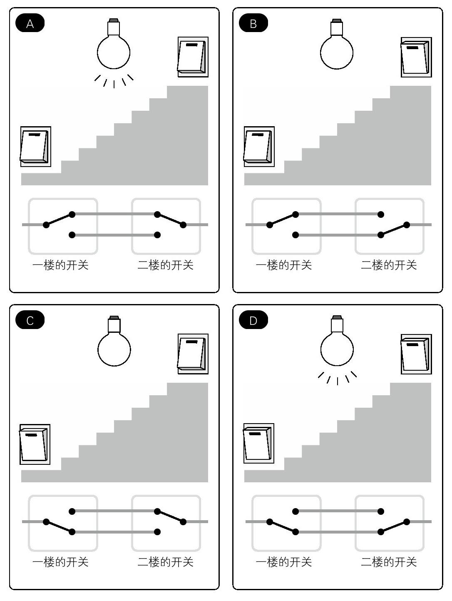
两个开关组合来点亮电灯
一楼的开关可以“向上推”和“向下推”，二楼的开关也可以“向上推”和“向下推”，因此每个开关都有两种流通方式，那么组合在一起，2×2就产生了4条可能的路径。
接下来，我们来考虑什么情况下照明设备会被点亮。
当两个开关都向上推时就是A中的情况。这种状态下将二楼的开关向下推电路就不再连通了，因此照明设备就会熄灭，也就是B中的状态。
在A状态下，将一楼的开关向下推会变成C中的状态，这时电路也会被切断，照明设施就会熄灭。跟A中相反，若将一、二楼的开关都向下推，电路就会连通起来点亮照明设备。
总的来说，开关的方向组合起来可以有四条电路，组合起来后照明设备点亮和熄灭的情况各有两种。将神秘的照明之谜理解为“组合问题”就容易多了。
数学常会隐藏在日常生活中——同时为你的生活提供帮助。
想要了解考试和测验，大家比较在意的是“统计值”。这就是“偏差值”。这是每个学生都耳熟能详的一个词。
据说“偏差值”最早是在旧日本陆军炮兵训练中开始使用的。
而将“偏差值”应用到学习能力的评测指标上时，称为“学习能力偏差值”。这也是在日本发明的——如果平均分的偏差值为50，学生就可以知道自己的得分跟平均分有多大的差距了。
报志愿时决定志愿院校和报考院校时也会利用到“偏差值”。但“偏差值”的数值真的那么值得信赖吗？
让我们站在数学的角度来考虑吧。
大家知道如何求得偏差值吗？想来很多人都饱受它的折磨，但是很多人对它却并不了解。那么让我们使用计算器来实际操作，导出偏差值。
有五个学生参加了数学考试，成绩为以下所列。请试着求出他们的偏差值。
＜得分＞
A：100分
B：80分
C：55分
D：40分
E：0分
偏差值可以通过下面的公式来求得。
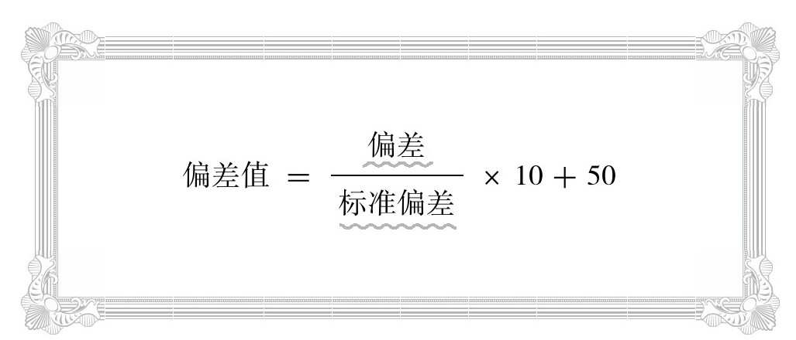
求偏差值的方法
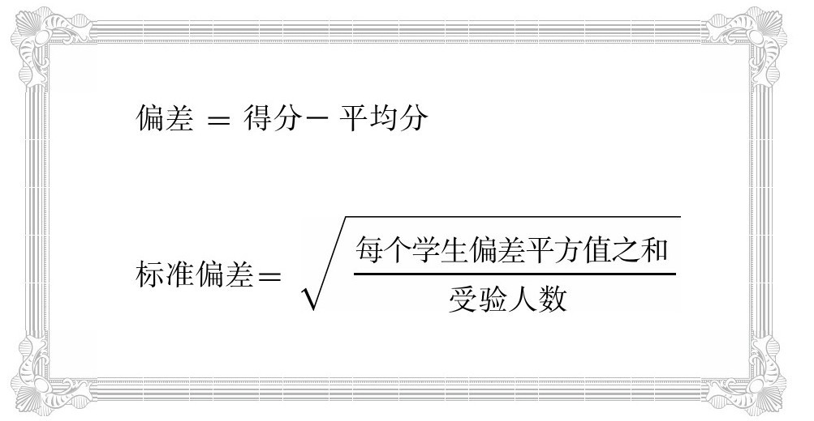
偏差和标准偏差的求法
公式中的“标准偏差”的说法并不常见，它是用来表示“波动”的指标。标准偏差值很小时说明学生的得分都集中分布在平均分上下（几乎没什么波动），数值很大时得分分布得很广泛（有波动）。
将数值代入计算。
五个人的平均分可以通过他们得分的总和除以人数来求得。
五个人的平均分=（100+80+55+40+0）÷5
=275÷5
=55（分）
从平均值求得偏差，再由偏差求出标准偏差，得出34.4分。接下来用偏差和标准偏差来计算出每个学生的偏差值，得出以下结果。
＜偏差值＞
A：63.1
B：57.3
C：50
D：45.6
E：34.0
◆根据五个人的测试结果求出标准偏差
（A的偏差）2=（100-55）2=2025
（B的偏差）2=（80-55）2=625
（C的偏差）2=（55-55）2=0
（D的偏差）2=（40-55）2=225
（E的偏差）2=（0-55）2=3025
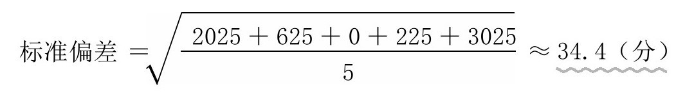
◆根据五个人的测试结果求出偏差值
A的偏差值=（100-55）/34.4×10+50≈63.1
B的偏差值=（80-55）/34.4×10+50≈57.3
C的偏差值=（55-55）/34.4×10+50=50
D的偏差值=（40-55）/34.4×10+50≈45.6
E的偏差值=（0-55）/34.4×10+50≈34.0
偏差值高于A和B为优秀，距离平均值有相当大的差距的E就要加油了，情况就是这样。
在第一次考试中得了0分的E通过努力学习，在第二次考试中得到了80分的高分。
“跟上一次相比，偏差值应该有大幅提升……”E在期待中昂头挺胸地领回成绩单……没想到偏差值居然比上次还要低，真是岂有此理。E的惊讶程度可想而知。
听起来像是个玩笑，但这却是真实发生的。让我们来揭穿这个圈套吧。
分数明明比上次提高了，可是偏差值居然下降了……
＜第二次考试的成绩＞
A：100分
B：95分
C：95分
D：90分
E：80分
（五个人的平均分是92分）
＜第二次考试的偏差值＞
A：61.8分
B：54.4分
C：54.4分
D：47.1分
E：32.3分
（标准偏差是6.78分）
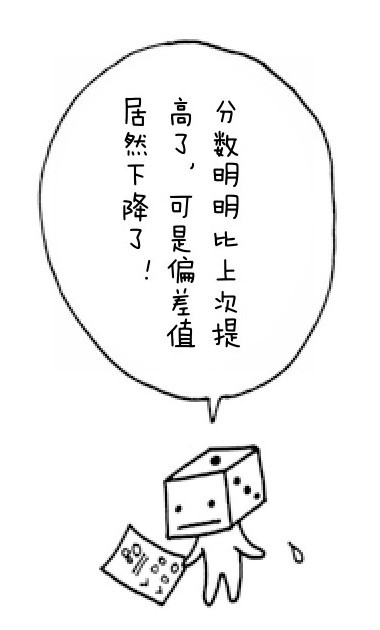
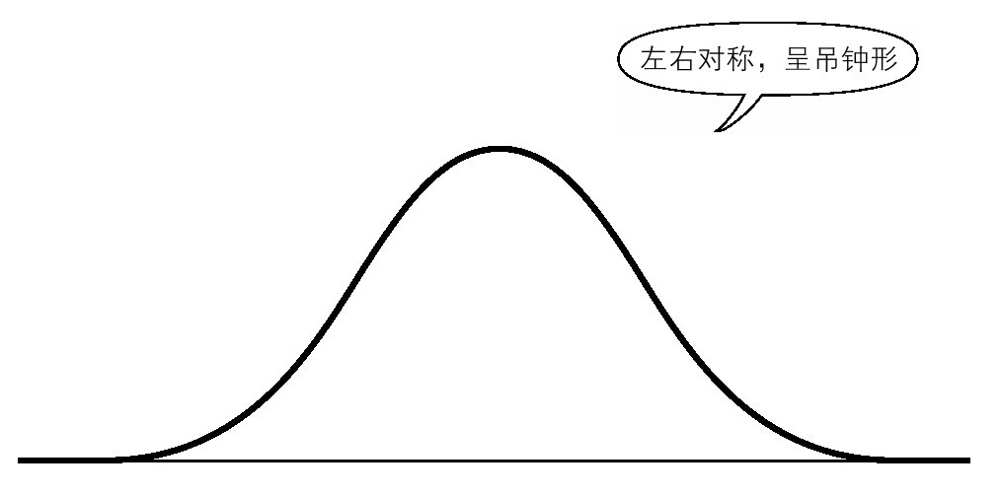
正态分布图
这是因为偏差值会根据平均分的不同而变化，“就算取得比0分高的分数却得到更低的偏差值”。在第二次考试中，五个人的成绩都很好，平均分高达92分。
平均分不同一眼就可以看出来，其实“偏差值的圈套”就是“得分的分布是否为正态分布”。考试结果的偏差值是否可信在很大程度上取决于这一点。
所谓正态分布，就是大多数的分数都集中在平均分上下，100分和0分都很少，画成图表就会呈左右对称的吊钟形。
参看偏差值时，重要的是“这是由几个人的集体中算出来的”。
成绩的分布一般呈正态分布。在全国几万人参加的大规模考试中，成绩的分布接近正态分布，这时得出的偏差值就比较可信。但是，只有几十人参加的考试无法形成正态分布，偏差值基本没有意义。
我们在看考试结果时，很容易被“偏差值”这项“数值”俘获，但此时我们必须了解清楚“这场考试有多少人参加”“分数是如何分布的”。
学生们不要因为偏差值而忽喜忽忧，要理解它的原理来当作前进的目标。
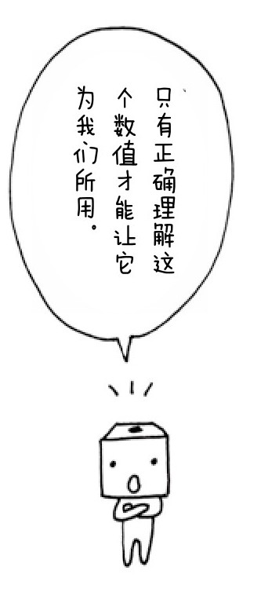
在数学的世界中，困扰着数学家的未解之谜有很多。下面就为大家介绍其中的一个——“哥德巴赫猜想”。
大于2的偶数4、6、8、10、12、14、16、……其中的秘密隐藏了起来。请大家看下面的算式。
4=2+2
6=3+3
8=3+5
10=3+7=5+5
12=5+7
14=3+11=7+7
16=3+13=5+11
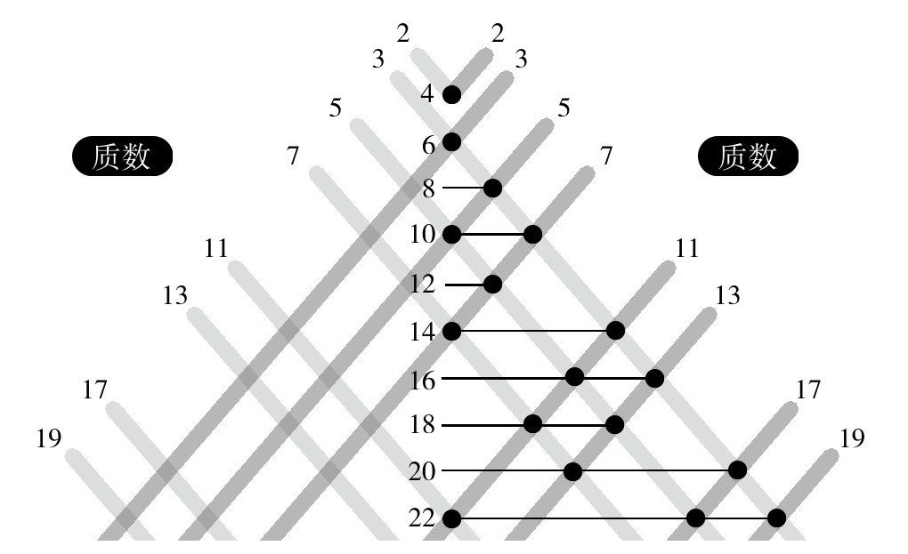
用质数表示大于2的偶数……
大家看懂算式中隐藏的秘密了吗？那就是每一个都是“大于2的偶数=质数+质数”。接下来我们用后续的数字继续确认这一规律。
18=5+13=7+11
20=3+17=7+13
22=3+19=5+17=11+11
18、20、22也可以用两个质数的和来表示。那么这条“大于2的偶数=质数+质数”的规则是否会一直延续下去呢？
18世纪，德国数学家克里斯蒂安·哥德巴赫（1690～1764）给莱昂哈德·欧拉（1707～1783）的信中写道：“大于5的自然数都可以用3个质数的和来表示。”
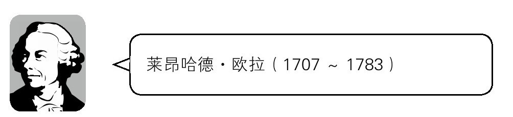
针对这个发现，欧拉回信写道：“大于2的偶数都可以用两个质数的和来表示。”
这是什么意思呢？
请将自然数分为奇数和偶数来思考。
3个质数组合在一起时，得到的和有奇数和偶数两种组合方式。
而在质数中只有2这一个偶数。
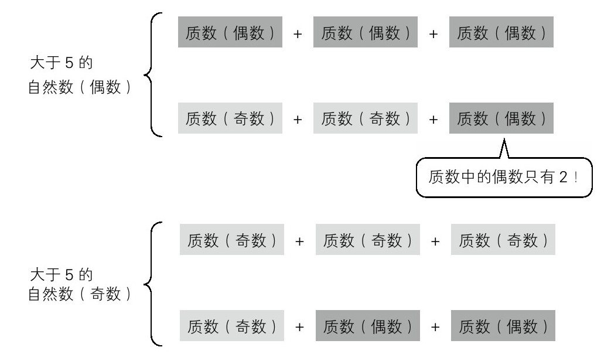
哥德巴赫信中的内容
我发现欧拉将哥德巴赫在信中的内容改为“大于6的偶数=质数+质数+2”“大于7的奇数=质数+质数+质数”，得出了“大于2的偶数可以用两个质数的和来表示”的结论。
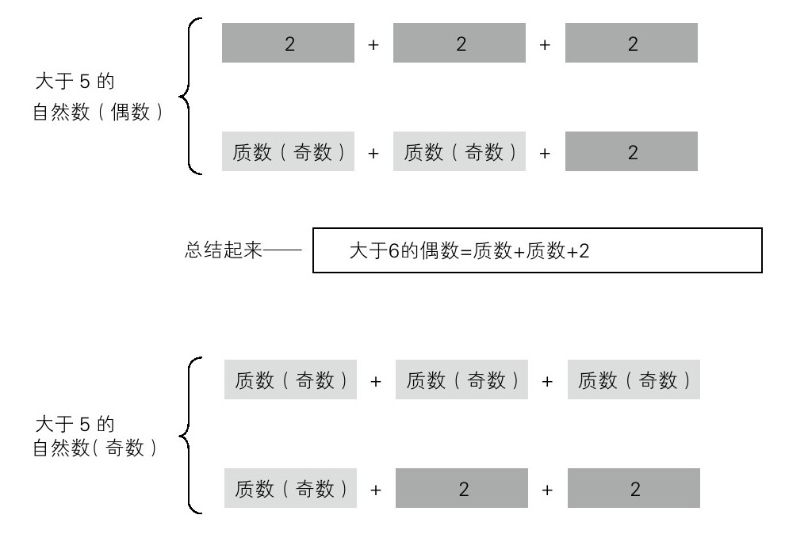
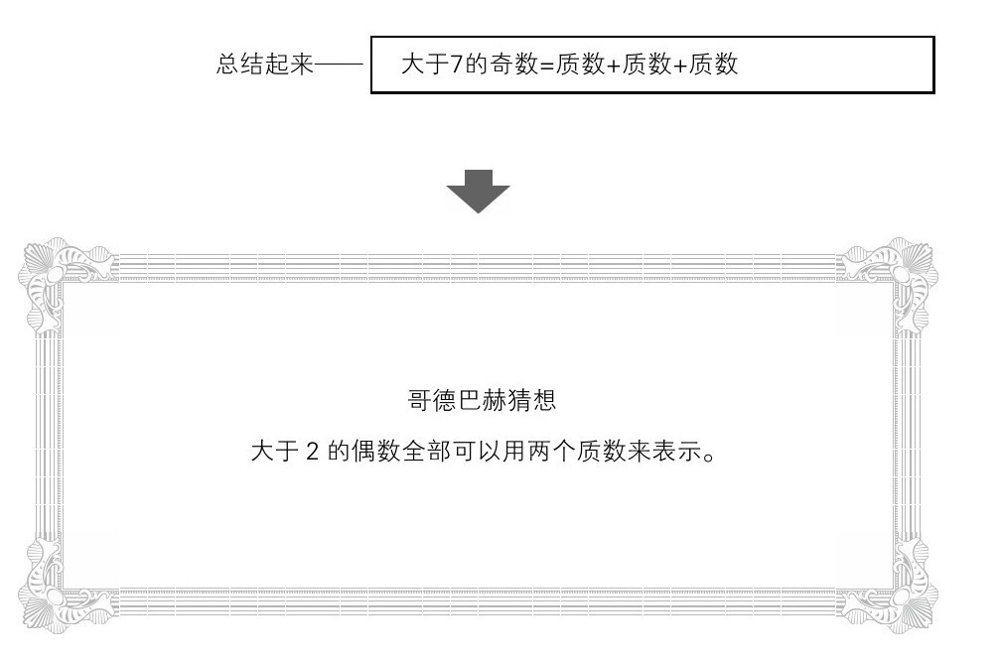
欧拉将哥德巴赫信中的内容换了说法
为什么欧拉要改变哥德巴赫的说法呢？他留下了一个巨大的谜团。
自那以后，很多数学家都尝试证明“‘所有'大于2的偶数都可以用两个质数的和来表示”这条猜想。
看上去似乎很简单，可是直到现在数学家们都没有证明出来。这正是“哥德巴赫猜想”这个未解之谜。
现代计算机的计算能力可以发挥“哥德巴赫猜想”的威力，很大的数字也可以验证。可是计算机终究能力有限，想要验证“所有”2以上的偶数是不可能的。可能最终还是要靠我们人类的头脑才能迎来难题解开的那一天。
到现在为止，人类花费了很长时间在谜题遍布的质数世界中冒险。即使拥有现代的智慧，这个冒险也不会停止。
质数的世界简直可以称为秘境。当思想在质数的世界里驰骋时，我总是怀着一颗冒险的心。